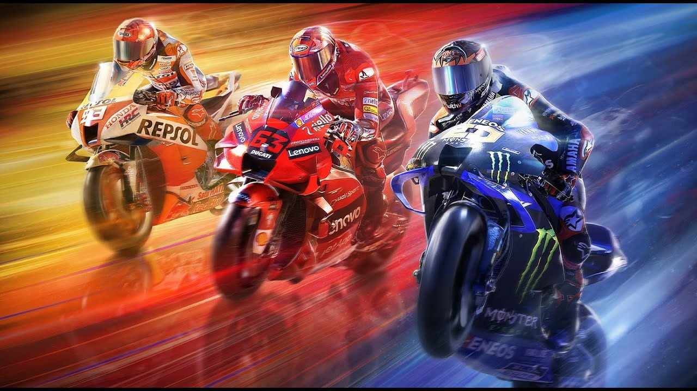

MOTO GB

YAMAHA YZF R-3
321 cilindradas, potencia maxima de 42 cv e torque maximo 3 kgfm.
o consumo medio e de 28 km/l e ela pode ser abastecida somente com gasolina
VALOR
34.513
399 cilindradas, potencia maxima de 48 cv e torque maximo 3,9 kgfm
com consumo medio de 25 km/l
VALOR
37.318
1340 cilindradas,potencia maxima de 190 cv e torque maximo 15,3 kgfm,
com consumo medio de 18 km/l
VALOR
127.603

999 cilindradas, potencia maxima de 207 cv e torque maximo de 11,5
kgfm, com consumo medio de 15,6 km/l
VALOR
125,289
VANTAGENS E DESVANTAGENS
VANTAGENS
Melhor desempenho,
principalmente nas curvas;
Maior potencia do motor;
Conforto
Maior consumo de combustivel;
Manutencao mais cara;
Dificuldade de pilotar.
NICOLE HASHIMOTO E ISADORA CAVALARI